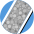
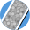

Zadania


 



Miasta
Aleksandrów Łódzki
Augustów
Bartoszyce
Bełchatów
Białogard
Białystok
Bielawa
Bielsk Podlaski
Bielsko-Biała
Biłgoraj
Bochnia
Bohumín
Bolesławiec
Brodnica
Brzeg
Bydgoszcz
Bytom
Będzin
Chełm
Chojnice
Chorzów
Chrzanów
Ciechanów
Cieszyn
Czechowice-Dziedzice
Czeladź
Czerwionka-Leszczyny
Działdowo
Dzierżoniów
Dąbrowa Górnicza
Dębica
Elbląg
Ełk
Gdańsk
Giżycko
Gliwice
Gniezno
Gorlice
Gostyń
Grajewo
Grodzisk Mazowiecki
Gryfino
Głogów
Hajnówka
Inowrocław
Iława
Jarocin
Jarosław
Jasło
Jawor
Jaworzno
Jelenia Góra
Kalisz
Katowice
Kielce
Kluczbork
Knurów
Kobyłka
Konin
Koszalin
Koło
Kołobrzeg
Kościan
Kościerzyna
Kraków
Kraśnik
Krnov
Krosno
Krotoszyn
Kutno
Kwidzyn
Kędzierzyn-Koźle
Kętrzyn
Kłodzko
Legionowo
Legnica
Leszno
Lubartów
Lubań
Lubin
Lublin
Lubliniec
Luboń
Lębork
Malbork
Marki
Mielec
Mikołów
Mińsk Mazowiecki
Mrągowo
Myszków
Mysłowice
Mława
Nowa Ruda
Nowa Sól
Nowy Dwór Mazowiecki
Nowy Sącz
Nowy Targ
Nysa
Olkusz
Opoczno
Opole
Orzesze
Ostrowiec Świętokrzyski
Ostrołęka
Ostróda
Ostrów Mazowiecka
Ostrów Wielkopolski
Oława
Oświęcim
Pabianice
Piaseczno
Piastów
Piekary Śląskie
Piotrków Trybunalski
Piła
Police
Polkowice
Poznań
Prudnik
Pruszcz Gdański
Pruszków
Przemyśl
Pszczyna
Puławy
Płock
Płońsk
Racibórz
Radom
Radomsko
Rawicz
Reda
Ruda Śląska
Rumia
Rydułtowy
Rzeszów
Sandomierz
Sanok
Siedlce
Siemianowice Śląskie
Sieradz
Skawina
Skierniewice
Sochaczew
Sosnowiec
Stalowa Wola
Starachowice
Stargard
Starogard Gdański
Suwałki
Swarzędz
Szczecin
Szczecinek
Szczytno
Słupsk
Tarnobrzeg
Tarnowskie Góry
Tczew
Tomaszów Mazowiecki
Turek
Tychy
Warszawa
Wałbrzych
Wałcz
Wejherowo
Wieliczka
Wieluń
Wodzisław Śląski
Wołomin
Wrocław
Września
Wyszków
Wągrowiec
Zabrze
Zakopane
Zambrów
Zamość
Zawiercie
Zduńska Wola
Zgierz
Zgorzelec
Ząbki
Łaziska Górne
Łomża
Łowicz
Łódź
Śrem
Środa Wielkopolska
Świdnica
Świdnik
Świebodzice
Świebodzin
Świecie
Świnoujście
Świętochłowice
Żagań
Żary
Żory
Żyrardów
Żywiec